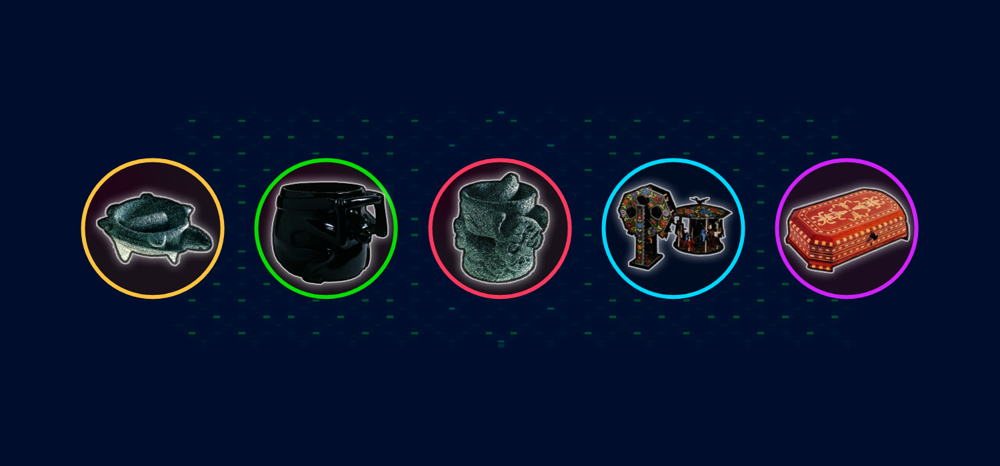

Como ves, la piedra y la madera han estado presentes en nuestra vida cotidianas y a través de sus diferentes formas y usos. Ya sea en fuentes, esculturas, columnas y muros, han vestido nuestras ciudades desde su origen.
México es tan rico en flores, tierras, árboles, animales que muchos de estos recursos se han ocupado en las creaciones de nuestros maestros artesanos.
Por eso hay arte popular elaborado con barro, metal, papel, piedra, madera, fibras vegetales y animales, piel, textil y muchos materiales.
La diversidad está hecha también de sueños, de colores, de formas y de imaginación que le imprime el maestro artesano. Con este reto finaliza nuestro viaje por el arte popular, espero te hayas divertido, puedes explorar cualquier tema cuando quieras.
¡Hasta pronto! ¡Grrr!